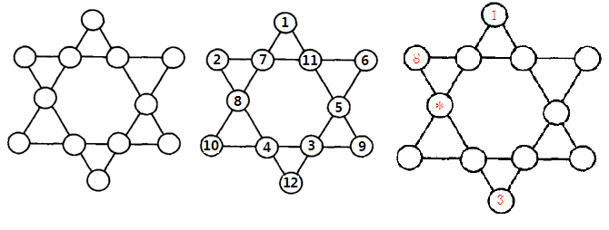

排列组合是组合学最基本的概念。所谓排列，就是指从给定个数的元素中取出指定个数的元素进行排序。组合则是指从给定个数的元素中仅仅取出指定个数的元素，不考虑排序。
排列与组合在日常生活中应用较广，比如在考虑某些事物在某种情况下出现的次数时，往往需要用到排列和组合。
【例1】n位二进制数的全排列。
编写一个程序，输入一个自然数n（1<=n<=10），输出n位二进制数的全排列。例如，输入3，输出8个3位二进制数的序列：000、001、010、011、100、101、110、111。
（1）编程思路。
可以采用递归的思想来解决这个问题。
设将产生n位二进制数的全排列的解决方法记为P(n)，显然，当n=1时，该位或置1或置0，问题解决；当n>1时，可以考虑将最高位或最低位置1或0，再按同样的方法产生其余n-1位二进制数的全排列，即递归调用P(n-1)。
具体做法是：
用一维数组a来保存产生的n位二进制数序列，产生过程是从最低位（第0位）到最高位（第n-1位）逐位产生的，每位可以有0和1两种情况，设产生n位二进制数中的第k位~第n-1位的操作记为p(int *a,int k,int n)，则这一操作过程为：
if (k==n) // 第0位到第n-1位共n位全部产生
{
输出结果；
return; // 递归终止
}
a[k]=0; // 当前第k位置0
p(a,k+1,n); // 产生第k+1 位~第n-1位
a[k]=1; // 当前第k位置 1
p(a,k+1,n); // 产生第k+1位~第n-1位
（2）源程序。
#include <iostream>
using namespace std;
void p(int *a,int k,int n)
{
if (k==n)
{
for (int i=0;i<n;i++)
cout<<a[i];
cout<<endl;
return;
}
a[k]=0;
p(a,k+1,n);
a[k]=1;
p(a,k+1,n);
}
int main()
{
int n,a[10];
cin>>n;
p(a,0,n);
return 0;
}
上面的例子产生了n位二进制数序列，若每位对应一个元素，0代表该元素不出现，1代表该元素出现；或每位对应一个问题，0代表该问题没有解决，1代表该问题被正确解决，这样可以在此基础上，解决实际的问题。
【例2】低碳生活大奖赛 （2012年第3届蓝桥杯省赛试题）。
某电视台举办了低碳生活大奖赛。题目的计分规则相当奇怪：
每位选手需要回答10个问题（其编号为1到10），越后面越有难度。答对的，当前分数翻倍；答错了则扣掉与题号相同的分数（选手必须回答问题，不回答按错误处理）。
每位选手都有一个起步的分数为10分。
某获胜选手最终得分刚好是100分，如果不让你看比赛过程，你能推断出他（她）哪个题目答对了，哪个题目答错了吗？
如果把答对的记为1，答错的记为0，则10个题目的回答情况可以用仅含有1和0的串来表示。例如：0010110011 就是可能的情况。
编写程序，输出所有可能的表示回答情况的字符串。
（1）编程思路。
采用例1的思路产生10位二进制数的全排列，每位二进制数码分别对应一个问题的解答情况，0代表答错，1代表回答正确。若计算出的分数恰好为100，则就是问题的一组解。
（2）源程序。
#include <iostream>
using namespace std;
void f(int s[] , int n , int score)
{
int i;
if(n>=11)
{
if(score == 100)
{
for(i=1;i<=10;i++)
cout<<s[i];
cout<<endl;
}
return;
}
s[n]=0; // 第n题答错
f(s, n+1, score-n);
s[n]=1; // 第n题答对
f(s, n+1, score*2);
}
int main()
{ int s[11];
s[10] = '\0' ;
f(s,1,10);
return 0;
}
【例3】李白打酒 （2014年第5届蓝桥杯省赛试题）。
大诗人李白，一生好饮。一天，他提着酒壶，从家里出来，酒壶中有酒2斗。他边走边唱：
无事街上走，提壶去打酒。
逢店加一倍，遇花喝一斗。
这一路上，他一共遇到店5次，遇到花10次，已知最后一次遇到的是花，他正好把酒喝光了。
请你计算李白遇到店和花的次序，可以把遇店记为a，遇花记为b。则：babaabbabbabbbb 就是合理的次序。请输出所有像这样的答案。
（1）编程思路。
同样按例1的方法生成15位二进制数的排列，对每一种排列进行判断，看是否满足要求（遇到店5次、酒正好喝完、最后一次遇到的是花），满足条件输出对应字符串即可。
（2）源程序。
#include <iostream>
using namespace std;
void dfs(int *a,int k)
{
if (k==15)
{
int alcohol,drinkery,i;
alcohol=2; drinkery=0;
for (i=0;i<15;i++)
if (a[i]==0)
{
alcohol=2*alcohol;
drinkery++;
}
else
alcohol--;
if (alcohol==0 && drinkery==5 && a[14]==1)
{
for (i=0;i<15;i++)
if (a[i]==0) cout<<"a";
else cout<<"b";
cout<<endl;
}
return;
}
a[k]=0;
dfs(a,k+1);
a[k]=1;
dfs(a,k+1);
}
int main()
{
int a[15];
dfs(a,0);
return 0;
}
（3）程序优化。
上面的程序中用二进制数0表示遇到店，1表示遇到花。实际上，可以直接定义一个字符数组char a[16]，该数组的元素a[0]~a[14]直接用字符’a’或’b’ 赋值，a[15]赋结束符’\0’。
另外，通过递归产生15位二进制数的排列，共215=32768种情况，也就是上面的程序搜索判断了32768种情况。实际上，由于满足问题的解是遇店5次，因此在某一搜索过程中遇店达到6次，肯定不是问题的解，无需继续进行，可以实施剪枝。
为了实施剪枝，需要在递归时记录酒的斗数和遇店的次数，可以改写函数为
void dfs(char *a,int k,int alcohol,int drinkery)，其中alcohol记录酒壶里酒的斗数，drinkery记录遇店的次数。
剪枝优化后的源程序如下：
#include <iostream>
using namespace std;
void dfs(char *a,int k,int alcohol,int drinkery)
{
if (k==15)
{
if (alcohol==0 && drinkery==5 && a[14]=='b')
{
cout<<a<<endl;
}
return;
}
if (drinkery<=5 && alcohol!=0) // 剪枝
{
a[k]='a';
dfs(a,k+1,2*alcohol,drinkery+1);
a[k]='b';
dfs(a,k+1,alcohol-1,drinkery);
}
}
int main()
{
char a[16];
a[15]='\0';
dfs(a,0,2,0);
return 0;
}
下面我们继续在例1递归程序的基础上进行扩展。
例1中程序是产生二进制数的全排列，因此每位只有0和1两种情况。若每位可以赋值0~9这10个数码中的任意一个，则可将例1递归程序中的
a[k]=0; // 当前第k位置0
p(a,k+1,n); // 产生第k+1 位~第n-1位
a[k]=1; // 当前第k位置 1
p(a,k+1,n); // 产生第k+1位~第n-1位
改写为：
for (int i=0;i<=9;i++)
{
a[k]=i;
p(a,k+1,n);
}
这样，若主函数中递归调用 p(a,0,3); ，则可以输出000~999共1000个三位数。
进一步考虑，如果需要产生的排列中各位数字全不相同，怎么办呢？
显然，在执行“a[k]=i;”将数字i（0~9之一）赋值给a[k]前需要判断i是否已被使用，如果数字i已被使用，则不进行赋值。
可以定义一个数组int visit[10]={0}标记数字是否出现，如visit[3]=1表示数字3已被使用，visit[3]=0表示数字3还未被使用。修改上面的递归函数如下：
void p(int *a,int k,int n,int visit[])
{
if (k==n)
{
for (int i=0;i<n;i++)
cout<<a[i];
cout<<" ";
return;
}
for (int i=0;i<=9;i++)
{
if (!visit[i])
{
a[k] = i; visit[i] = 1;
p(a,k+1,n,visit);
visit[i] = 0;
}
}
}
在主函数中定义数组int x[10]和int visit[10]={0}，递归调用函数p(x,0,3,visit)，可以输出无重复数字的三位数012~987（共720个数）的排列。
如果再将递归函数中对a[k]赋值的循环语句 for (int i=0;i<=9;i++)，改写为 for (int i=1;i<=n;i++)，则递归调用
函数p(x,0,3,visit)，可以输出由1、2、3三个数字组成的无重复数字的三位数的全排列（123、132、213、231、312和 321）。
【例4】马虎的算式（2013年第4届蓝桥杯省赛试题）
小明是个急性子，上小学的时候经常把老师写在黑板上的题目抄错了。有一次，老师出的题目是：36 x 495 = ? 他却给抄成了：396 x 45 = ? 但结果却很戏剧性，他的答案竟然是对的！因为 36 * 495 = 396 * 45 = 17820
类似这样的巧合情况可能还有很多，比如：27 * 594 = 297 * 54。
假设a、b、c、d、e 代表1~9不同的5个数字（注意是各不相同的数字，且不含0），能满足形如：ab * cde = adb * ce 这样的算式一共有多少种呢？
（1）编程思路。
定义一个数组int num[6]，其中num[1]~num[5]五个元素分别表示a、b、c、d、e的取值。可仿照前面扩展探讨的方法，生成由1~9这9个数字组成的无重复数字的5位数的全排列。
生成1~9不同的5个数字存储到数组中后，检测对应算式ab*cde == adb*ce是否成立，如果成立，是一组解，输出并计数。
#include <iostream>
using namespace std;
void dfs(int num[], int pos,bool visit[],int &cnt)
{
if(pos == 6) // 已有5个数
{
int ab = num[1]*10 + num[2];
int cde = num[3]*100 + num[4]*10 + num[5];
int adb = num[1]*100 + num[4]*10 + num[2];
int ce = num[3]*10 + num[5];
if(ab*cde == adb*ce)
{
cout<<ab<<"*"<<cde<<"="<<adb<<"*"<<ce<<"="<<ab*cde<<endl;
cnt++;
}
return;
}
for(int i = 1;i <= 9;i++)
{
if(!visit[i])
{
num[pos] = i; visit[i] = true;
dfs(num,pos+1,visit,cnt);
visit[i] = false;
}
}
}
int main()
{
int num[6],cnt=0;
bool visit[10];
for (int i=1;i<=9;i++)
visit[i]=false;
dfs(num,1,visit,cnt);
cout<<"Count="<<cnt<<endl;
return 0;
}
【例5】六角填数（2014年第5届蓝桥杯省赛试题）。
在如图1所示六角形中，填入1~12共12个不同的数字，使得每条直线上的4个数字之和都相同。如图2所示为一种可行的填法。图3中，已经替你填好了3个数字，请你计算星号位置所代表的数字是多少？

图1 图2 图3
（1）编程思路。
定义一个数组int a[13]，其中a[1]~a[12]这12个元素分别从上到下，自左向右的12个圆圈。可仿照前面扩展探讨的方法，生成由1~12这12个数字组成的无重复数字的全排列。
生成1~12不同的12个数字存储到数组中后，检测6条直线上的四个数字之和是否全相等，如果全相等，是一组解，输出并计数。
（2）源程序。
#include <iostream>
#include <iomanip>
using namespace std;
int a[13];
int vis[13];
int cnt=0;
void dfs(int x)
{
if(x == 12)
{
int t[6];
t[0] = a[1] + a[3] + a[6] + a[8];
t[1] = a[1] + a[4] + a[7] + a[11];
t[2] = a[2] + a[3] + a[4] + a[5];
t[3] = a[2] + a[6] + a[9] + a[12];
t[4] = a[8] + a[9] + a[10] + a[11];
t[5] = a[12] + a[10] + a[7] + a[5];
for(int i = 1; i < 6; ++i)
{
if(t[i] != t[i-1]) return ;
}
cnt++;
cout<<"No "<<cnt<<endl;
cout<<setw(12)<<a[1]<<endl;
cout<<setw(3)<<a[2]<<setw(6)<<a[3]<<setw(6)<<a[4]<<setw(6)<<a[5]<<endl;
cout<<setw(6)<<a[6]<<setw(12)<<a[7]<<endl;
cout<<setw(3)<<a[8]<<setw(6)<<a[9]<<setw(6)<<a[10]<<setw(6)<<a[11]<<endl;
cout<<setw(12)<<a[12]<<endl<<endl;
return ;
}
for(int i = 1;i < 13; ++i)
{
if(!vis[i])
{
vis[i] = 1;
a[x] = i;
dfs(x+1);
vis[i] = 0;
}
}
}
int main()
{
for (int i=1;i<=12;i++)
vis[i]=0;
vis[1] = 1;
a[1] = 1;
vis[8] = 1;
a[2] = 8;
vis[3] = 1;
a[12] =3;
dfs(3);
cout<<"Count="<<cnt<<endl;
return 0;
}
【例6】差三角形。
观察下面的数字组成的三角形：
3
1 4
5 6 2
看出什么特征吗？
1）它包含了1~6的连续整数。
2）每个数字都是其下方相邻的两个数字的差（当然是大数减去小数）
满足这样特征的三角形，称为差三角形。
编写程序，找出由1~15共15个整数组成的一个更大的差三角。
（1）编程思路。
先确定最后一行的值，即在1~15（5*6/2）这15个数中任意选取5个元素进行全排列。之后，按差三角形的特征依次确定上面其它行的值。在确定值的过程中，若某个值已被使用，则不可能是问题的解。直接剪枝，进行下次搜索。
（2）源程序。
#include <iostream>
#include <iomanip>
#include <cmath>
using namespace std;
void judge(int take[],int n)
{
bool visited[22]; // 最多6行，21个数
int num[6][6],i,j,x;
for (i=1;i<=n*(n+1)/2;i++)
visited[i]=false;
for(i = 0; i < n; i++)
{
num[n-1][i]=take[i];
visited[take[i]] = true;
}
for (i=n-2; i>=0; i--)
for (j = 0; j <= i; j++)
{
x = abs(num[i+1][j] - num[i+1][j+1]);
if(visited[x])
return;
if(x>=1 && x<= n*(n+1)/2)
{
visited[x] = true;
num[i][j] = x;
}
}
if (num[n-1][0]>num[n-1][n-1]) return ;
for (i = 0; i < n; i++)
{
for(j = 0; j<=i; j++)
cout << setw(4)<<num[i][j];
cout << endl;
}
cout<<endl;
}
void dfs(int take[], int index, bool vis[],int n)
{
int i, j;
if (index==n)
{
judge(take,n);
return;
}
for(i = 1; i <= n*(n+1)/2; i++)
{
if(!vis[i])
{
vis[i] = true;
take[index]= i;
dfs(take, index+1,vis,n);
vis[i] = false;
}
}
}
int main()
{
int n,take[6],i;
bool vis[22];
cin>>n;
for(i = 1; i <= n*(n+1)/2; i++)
vis[i]=false;
dfs(take,0,vis,n);
return 0;
}
【例7】带分数（2013年第4届蓝桥杯省赛试题）。
100 可以表示为带分数的形式：100= 3 + 69258 / 714
还可以表示为：100 = 82 + 3546 / 197
类似这样的带分数，100 有 11 种表示法。
需要强调的是：带分数中，数字1~9分别出现且只出现一次（不包含0）。
编写一个程序，输入一个正整数N（N<1000*1000），输出该数字N用数码1~9不重复不遗漏地组成带分数表示的全部种数。
（1）编程思路。
若将带分数符号化为 num=m1+m2/m3；那么首先m1一定是小于num的，又因为num为整数，所以m1和m2/m3都是整数，这就要求m2/m3一定可以整除，所以m2%m3=0，m2/m3还要满足可除条件，即m2>=m3。因此，可确定四个条件： 1)m1<num； 2)m2%m3=0； 3)m2>=m3； 4)num=m1+m2/m3。
因此，程序只要在1~9的全排列中选取满足这四个条件的全排列就是所求的结果之一。
1~9的全排列生成方法可以参照前面的例子。本例的关键还在于在1~9的全排列（9个数字）中如何确定m1，m2，m3的取值范围。
m1的取值应小于num，而m2一定大于或等于m3，则m2的取值范围一定在m1选择过后去选择剩下的一半或一半以上的数据。举个例子，1~9的其中一个全排列为 156987423，若m1选择156，则m2只能选择剩下的987423中的一半或一半以上，如987、9874、98742。如果m2小于剩下的一半，那么一定不满足除法（如98/7432）。m3的范围则是m1和m2选择剩下的所有了。
假设m1选择9位中的前i位，那么m2的选择范围为第i+（9-i）/2至9-1位数字（结尾为一半或一半以上，最多时到9-1，给m3留一个数字）。
（2）源程序。
#include <iostream>
using namespace std;
int aws=0;
int a[10],flag[10];
int sum(int start,int end)
{
int i,num=0;
for(i=start;i<=end;i++)
num=num*10+a[i];
return num;
}
void Found(int a[],int num) // 将DFS中的每一个全排列结果放在Found函数中检验
{
int i,j,m1,m2,m3;
for(i=1;i<10;i++)
{
m1=sum(1,i); // 第一个数从1至9开始选
if (m1>=num) return; // 不满足第一个数<num的直接淘汰
for(j=i+(9-i)/2;j<9;j++)
{
m2=sum(i+1,j); // 第二个数
m3=sum(j+1,9); // 第三个数
if (m2>m3 && m2%m3==0 && num==m1+m2/m3)
{
cout<<num<<"="<<m1<<"+"<<m2<<"/"<<m3<<endl;
aws++;
}
}
}
}
void DFS(int start,int num) // 对1~9进行全排列
{
int i;
if (start==10)
Found(a,num);
else
{
for(i=1;i<10;i++)
{
if(flag[i])
continue;
a[start]=i;
flag[i]=1;
DFS(start+1,num); //选择好一位开始选下一位
flag[i]=0;
}
}
}
int main()
{
int num,i;
for(i=1;i<10;i++)
flag[i]=0;
cin>>num;
DFS(1,num);
cout<<aws<<endl;
return 0;
}